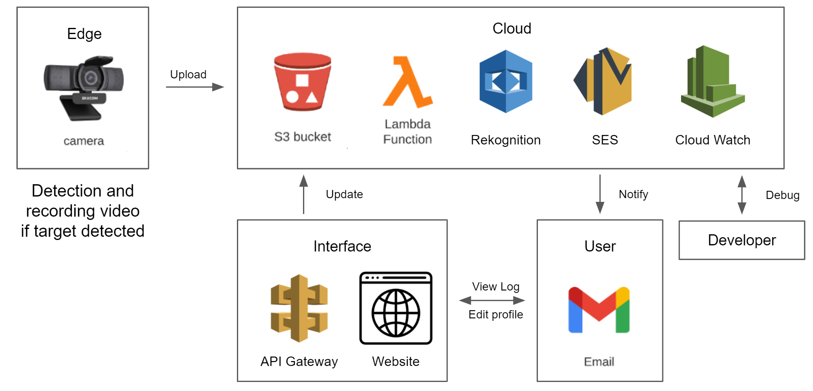

HISTORY CAPTURES
Stay Safe!
Here shows 3 previous analysis of captured strangers passed by your house.

11:12pm Sun 5 Dec 2021
Violence detected!
Probability is 50%!

3:46pm Sun 4 Dec 2021
No violence behavior detected.

8:52am Sun 4 Dec 2021
No violence behavior detected..
The House Owner
This is the image for identification!

Report
Introduction
Trespassing, break-ins and stealing are serious problems for residents. Traditionally, people choose to install CCTV (closed circuit television) to record the crimes. However, this kind of device has huge drawbacks. They need the owner to actively log into the system to check the videos. Besides, it has a time delay. House owners can only get the information after the crime has already happened. As a result, we came up with a solution to combine edge devices and cloud services to provide house owners with real-time monitoring and alerting.
The project is uploaded to Github: https://github.com/xs2445/HouseSecuritySystemAWS-6770-project

Fig 1 System Structure
System Construction
The idea of this project is to recognize strangers and alert the house owners. Because of the limit of edge devices, we cannot implement all the analysis tasks on it. The edge devices only take a small part of the detection task. The analysis of person identification needs to be moved on the cloud. The whole system contains three parts: detection and uploading, analyzing and email sending.
- Detection and Uploading
We use our camera on our own PCs to simulate the monitor camera. It will try to open the file and if it succeeds, it will detect objects based on the YOLOv5 nano version in real-time and record a short video when a person is detected. To make the system more robust, we set a confidence variable that counts the time a person is continuously detected. We assume a person is detected only when the class “person” is detected for continuous four time. Then a user-set length of the video and the first frame of that video is recorded and uploaded to the S3 bucket named “6770 project”. When everything is done, it will release everything. We use a defined function “upload files” to upload files to S3 buckets.
- Analyzing
The goal of analyzing is to recognize the strangers and implement email sending when there is a stranger detected. It is also able to realize the violence detection when a weapon is detected with the stranger. This behaviour will cause the sent email to be different in contents. The email will notify the house owner of the possibility of violence happening.
To recognize the identification of a detected person, we used AWS service “rekognition” to visually compare the face of that stranger with the face of house owners. There are some face details of familiar people being stored in S3 buckets in advance. When the video is uploaded to S3 buckets, it will capture a picture from the first frame of the video and then compare the person with the face details that have already been stored. Then we use the Rekognition service to analyze the faces of the people detected and count the number of strangers. We set a similarity threshold to make the result more accurate. Additionally, Some characteristics of common weapons are stored in S3 as well. Such as guns. As a result, the system is also able to tell if the person is carrying a weapon to make sure of the user’s security.

Fig 2 Logic Flowchart
- Email Sending
Finally, we use Lambda and SES services to send an email to make an alert. We design the subject of the email to be security alert, and the context to be “ ‘number of strangers’ Strangers Just Passed By Your House”. We also attach the picture of the strangers to the email. The sent email will be like this:

Fig 3 Received email when no violence detected

Fig 4 Received email when violent behavior is detected
- User Interface
To visualize the result and also enable the user to edit their profiles like receiving email and images of house owners, we developed a website as the user interface. The website is static based on AWS S3, which allows us to use API to invoke lambda functions. Create two lambda functions. One for updating email addresses and appending them into the csv file, the other for uploading the target image and replacing the original one. Then create api gateways as triggers of lambda functions, embed the http request into the static website. Finally, to make the fixed domain of our website easy to remember, a fixed domain is attached to the website. Users can conveniently visit the website by monitor6770.click.
Video
This video demonstrates basic functions of this project.
House Owner?
Add your email to the receiving list!
Replace Image of House Owners
Receiving Email List:
Here shows the full receiving list!